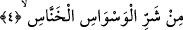

terkedilip bırakılır. Şâir şöyle demiştir:
Nûmanı tekrar tekrar zikret, çünkü onun zikri misktir.
Tekrarlandıkça kokusu yayılır.
İnsanlar mahlûkatının en şereflileri olmasaydı Allah Teâlâ Kitab’ını onların zikri ile
sona erdirmezdi.
4. O gizlice vesvese verenin şerrinden
Visvâs, vesvese mânâsında isimdir. O da “duyulmadığı için kaçınmanın mümkün
olmadığı gizli ses” demektir. Yapı bakımından Zelzele mânâsındaki zilzâl kelimesine
benzer. Bu kelimenin masdarı ise kesre ile Visvâs şeklindedir. Masdar ile ism-i masdar
arasındaki fark şöyledir: Eğer bir eylemin fâilden sudûru ve mef‘ûl üzerinde
gerçekleşmesi îtibâra alınıyorsa masdar diye, bu haysiyet îtibâra alınmıyorsa ism-i
masdar diye isimlendirilir. Vesvese, vesvesecinin tekrar ettiği ve muhâtabına
vurgulayıp pekiştirerek söylediği bir söz olunca, mânâsındaki bu tekrara karşılık lafzı
da tekrarlandı. Visvâs’tan kasıd şeytandır. Çünkü o sesi işitilmeyen, ancak kalbin
anladığı gizli bir sözle mâsiyete çağırır. Bunu da Allah’ın rahmeti ile kandırarak, daha
çok ömrü olduğunu ve tevbe için daha çok vakti bulunduğunu vehmettirerek yapar.
Şeytanın, yaptığı işle isimlendirilmesi yâni onun için müvesvis/vesveseci değil de
vesvâs/vesvese denilmesi mübâlağa içindir. Sürekli vesvese verdiği için sanki
vesvesenin bizzat kendisi olmuştur. İstiâze/sığınma, vesvese verme sıfatıyla mevsuf
şeytandan olmuş da “onun vesvesinin şerrinden … sığınırım” şeklinde bir ifâde
kullanılmamıştır. Çünkü istiâzenin şeytanın bütün şerrini içine alması murâd edilmiştir.
Bu sûrede, şeytanı, sıfatlarının en büyüğü, en şerlisi, en tesirli ve fesâdı en yaygın
olanı ile vasıflayıp ondan “İlâh” ismine sığınıldı, Felâk sûresinde olduğu gibi başka bir
isme sığınılmadı. Çünkü Rahmân’a mukâbil olan ve bütün insânî cem‘î sûrete müstevli
olan şeytandır. Bütün esmânın sûretinde zuhûr edip o sûretlere girebilir, sâdece Allah
ve Rahmân isimleri hâriç. Bu bakımdan Hâdî, Alîm, Kadîr vb. isimlerle istiâze yapmak
yeterli olmamıştır. Onun için ihticâb (perdelenme) ve dalâletten sığındığı zaman
Felâk’ın rabbine sığındı. Burada ise insanların rabbine sığındı. “Beni gören gerçekten
beni görmüştür. Çünkü şeytan benim sûretime temessül edemez”[279] hadisinin mânâsı
da buradan anlaşılıyor. Aynı şekilde şeytan, Efendimiz (s.a.)’in ümmetinden kâmil
insanların da sûretine giremez. Çünkü onlar mutlak hidâyet mazharlarıdır.
Bazı büyükler demişlerdir ki: İlkâ; insanın kalbine bir bilgi veya duygu atmak ya
sahihtir veya fâsiddir. Sahih olan iki kısımdır: 1. İlim ve irfanla alâkalı İlâhî ve Rabbânî
ilkâ, 2. Melekî ve rûhânî ilkâ. İnsanı ibâdete ve içerisinde salâh bulunan şeye sevk eden
ikincisidir. Sahih olan bu ilkâya ilhâm denir.